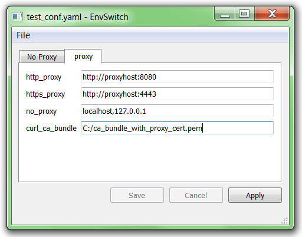

envswitch¶


envswitch provides a very simple GUI and CLI to easily switch between environments.

A typical use case is when you sometimes work behind a network proxy and sometimes not: you have to often change the values of your http_proxy, https_proxy, no_proxy and curl_ca_bundle environment variables as explained here.
envswitch provides you with a very convenient way to remember sets of environment variables with associated values, and to apply a given set (so-called 'environment') at any time in a mouse click or a terminal command.
In addition, envswitch allows users to save environment definition files as .yaml, so as to ease the process of sharing such files among developers.
The application comes in two flavours:
-
A Standalone application that includes a Graphical User Interface (GUI) and a commandline (CLI)
-
A python package that can launch the GUI and CLI too
You can get more information on how to install and launch the GUI and CLI in both modes in the corresponding sections.
Usage¶
Configuration file¶
A .yml or .yaml configuration file is needed to use the tool. The format is really simple: it is a yaml file containing a list of named environments (env_a and env_b below), where each environment contains a list of environment variable names and values:
env_a: name: Hello foo: 'hello' bar: 'world' env_b: name: Goodbye foo: 'goodbye' bar: 'world'
An optional special variable named 'name', can be provided in order to customize the name of the environment in the GUI. Note that you can provide any number of environments, and they do not necessarily have to contain the same variables.
Here is a template file for network configuration, to switch between proxy and no proxy states (see here for details).
GUI¶
The following screen capture shows the GUI loaded with a network proxy switching configuration file.
- Two environments are defined: "No proxy" and "Proxy"
- The user may select the one to apply by clicking on the corresponding tab, and by clicking on the 'Apply' button. This will set all of the defined environment variables to their displayed values.
CLI¶
The commandline version of envswitch provides an easy way to switch between environments in addition to the GUI. Simply execute it without argument to get some help:
> envswitch
yields
Usage: envswitch [OPTIONS] COMMAND [ARGS]... Envswitch commandline. Use 'envswitch COMMAND --help' to get help on any specific command below. Options: --version Show the version and exit. --help Show this message and exit. Commands: apply list open
There are commands for all main actions that can be done in the GUI. For example, instead of opening the GUI, clicking on the 'No proxy' tab and clicking on 'Apply', you may simply do it in the terminal:
> envswitch apply no_proxy
Note that by default the configuration file used will be the last one edited with the GUI. If you wish to temporarily use another one, simply specify it with the -f option:
> envswitch apply -f other_config.yml other_env_id
You can also open a configuration file in a permanent way. That file will be the default one available the next time the GUI is launched
> envswitch open other_config.yml
See Also¶
Inspiring references:
- Python desktop apps Overview: http://takluyver.github.io/posts/so-you-want-to-write-a-desktop-app-in-python.html
- PyQt and Qt designer: https://nikolak.com/pyqt-qt-designer-getting-started/
- PyQt Main Window example: http://doc.qt.io/qt-5/qtwidgets-mainwindows-application-example.html
- Resources in Qt: https://stackoverflow.com/questions/36673900/importing-resource-file-to-pyqt-code
- Example project with tray icon: https://github.com/dglent/meteo-qt
- MVC with PyQt:
Alternatives to PyQt: Enaml wxPython
Alternatives to cx_Freeze: * pyinstaller, with this tutorial
Do you like this project ? You might also like these
Want to contribute ?¶
Details on the github page: https://github.com/smarie/env-switcher-gui